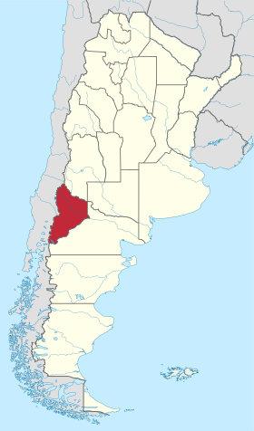
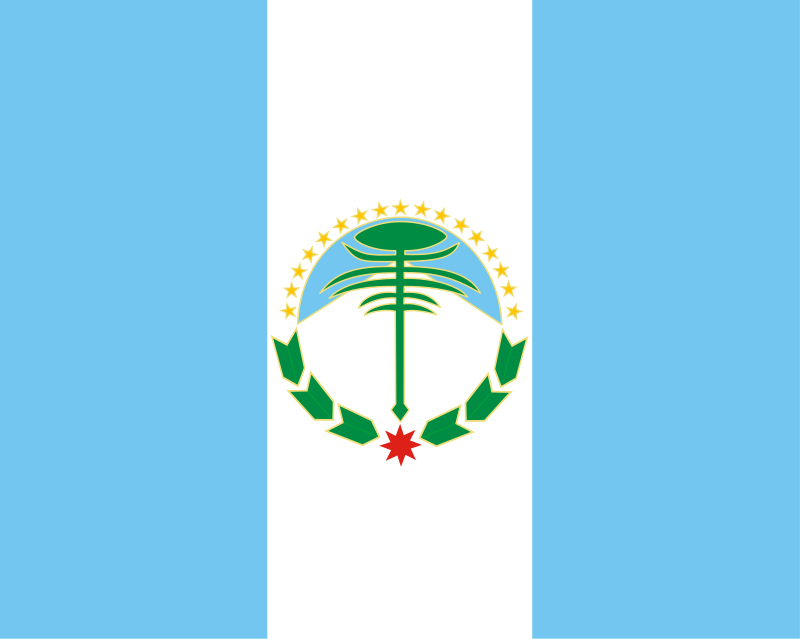

Pescando-ando
A todos los que practican la pesca de forma deportiva, respetando la biodiversidad y el medio ambiente, queda decirles que el mar es una amante cruel. Ella te atrae con su belleza. Y luego ella te roba el aliento. Los pescadores conocen sus secretos. Saben leer sus estados de ánimo. Y saben cómo sobrevivir. Cuando llega el tiempo tormentoso, los pescadores salen al mar en sus pequeños botes desafían las olas. Saben los riesgos que corren, pero lo hacen de todos modos por amor al mar. Los peces pican hoy, las redes estan llenas, los pescadores están felices, regresan a la orilla con su pesca del día. El mar es una amante cruel, pero los pescadores conocen sus secretos y continúan desafiando sus tormentas, por amor al mar.
Última jornada en Laguna Blanca - Neuquén
En nuestro último encuentro en Laguna Blanca, pudimos disfrutar de una tarde de pesca entre viejos compañeros.

Ubicación geográfica de la provincia en el País
Neuquén (en el texto de la Constitución provincial: Provincia de Neuquén o Provincia del Neuquén) es una de las veintitrés provincias que hay en la República Argentina. A su vez, es uno de los veinticuatro estados autogobernados o jurisdicciones que conforman el país, y uno de los veinticuatro distritos electorales legislativos nacionales. Su capital y ciudad más poblada es la homónima ciudad de Neuquén.
Está ubicada al noroeste de la Región Patagónica y al oeste de la Región del Comahue, la cual ocupa la mitad sur del país; limita al norte con Mendoza (parte de su frontera la forma el río Colorado), al sureste con Río Negro (gran parte de esta frontera la forma el río Limay) y al oeste con Chile, con las regiones chilenas de Maule, Ñuble, Bío-Bío, La Araucanía, Los Ríos y Los Lagos, cuyos límites están determinados por la divisoria de agua y el criterio de altas cumbres de la cordillera de los Andes. Los límites de las provincias de La Pampa, Río Negro, Mendoza y Neuquén, se encuentran en un punto, en la intersección del río Colorado con el meridiano 68º 15' O. En esta provincia vive una importante comunidad mapuche.
Provincia del Neuquén
La provincia toma su nombre del río Neuquén. Asimismo y según las fuentes, el término Neuquén proviene del mapudungun Newenken que significa "correntoso", o de Ñedquén que significa "atrevido, arrogante, audaz".
Una de las primeras alusiones se encuentra en las crónicas de extranjeros del sacerdote alemán Bernardo Havestadt, en el año 1752, quien en su diario de travesía cuenta que pernoctó del otro lado de un río amenazador llamado Neuquén.

La Ley Provincial nº 1817 del 13 de Noviembre de 1989, creó la Bandera Oficial de la Provincia del Neuquén que es enarbolada junto a la Bandera Nacional en los edificios y actos públicos.
El diseño se debe al Sr. Mario Aldo Mástice, creador también del Escudo Provincial, cuyos elementos más significativos plasmó en la Bandera Neuquina.
Las tres bandas verticales, dos azul celeste y una blanca, indican nuestra pertenencia a la República Argentina.
La silueta estilizada del Pehuén, árbol tìpico del Neuquén, simboliza la personalidad y características propias de los neuquinos.
La estrella federal al pie del Pehuén significa el espíritu federal que nos anima como parte integrante de nuestro país.
La silueta del Lanín, con su vértice hacia el azul del cielo, expresa nuestro deseo y vocación de grandeza.
Los laureles de la base significan, la gloria, la libertad y la paz legadas por nuestros mayores.
Las estrellas en semicírculo representan la hermandad y la únion de los neuquinos distribuidos en los 16 departamentos que integran la provincia.
Quimey Neuquén
Flor de los arenales, regada en sangre del bravo Sayhuenque; grito que está volviendo, en tu desbocado potro pehuenche.
Del cielo en la honda noche se oye del viento, la serenata, tupu de luna prende en la negra cimba de mi araucana.
Sol que se está gastando en piedras, lajas y turbias corrientes, besa la sombra india que vuelve crecida de un sueño verde.
Ya madura el silencio por el agreste vientre de tus bardas; quiere Rayén dormirse, tiemblan sus entrañas enamoradas.
Aguas que van... quieren volver... aguas que van, quieren volver, río arriba en el canto aprendido Neuquén Quimey, Quimey Neuquén.